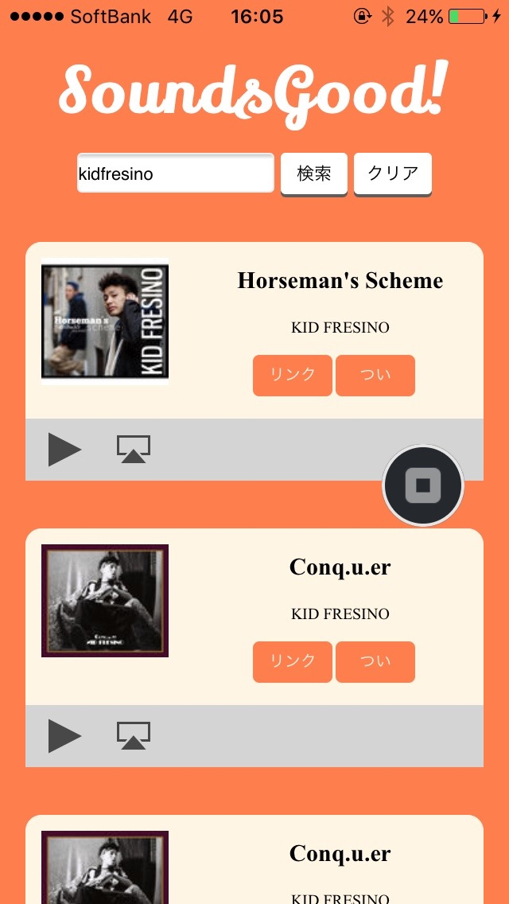
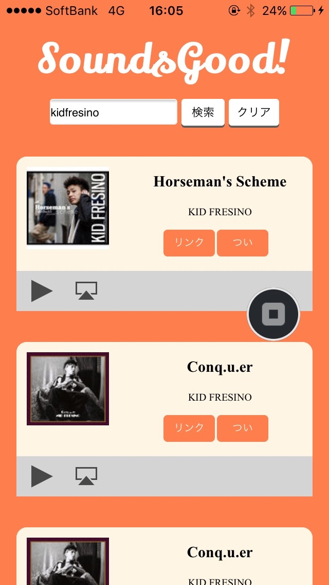

- Production -
" 友達ともっと簡単にお気に入りのアーティストの共有を " をテーマに、製作したものです。友 達に「このアーティストめっちゃいいよ!」と紹介するときに、youtube などをわざわざ開いて、 検索して、ロードを待って、というのは面倒くさいので、曲かアーティストで検索し、いい感じの 30 秒をすくぐに共有できます。ほとんどが代表曲なので、イメージも掴みやすいです。その曲や アーティストが気に入れば、リンクボタンからすぐに購入もできます!
- Overview -
先輩がつくったものを改変したものです。monaca を使って、ハイブリッドアプリ(iOS,Andoroid 対応アプリ) を作ろうと思い、開発環 境は主に monaca に依存した。そのため、フロントの技術で開発をすることになった。なので、 今回は基本、スマホのためのウェブアプリです。アークアップは HTMLで行い、CSSで装飾、js で動きを加えて、API を引っ張ってくるようにした。音楽は、iTuens を API に使うことでフリー に解決。そんなに難しいことはして無いが、デザインからやったので大変だった。思案にあたり、 デザイン思考を元に、ユーザー調査も行った。